คู่มือใช้งานเครื่องมือ · ระดับ Free
สมการฐานพลังงานและกราฟ CUSUM
EnMS MLR & CUSUM Dashboard
FREE
สำหรับช่างเทคนิคที่เพิ่งเริ่มงาน — อ่านแล้วทำตามได้เอง
ใช้เวลาฝึกประมาณ 45 นาที
เคสตัวอย่าง: โรงงาน A ข้อมูลฐานปี 2567 ติดตามผลปี 2568 (ข้อมูลแต่งขึ้น)
อ.หนึ่ง กลับทวี / Aj. Nueng Klubtavee
tripleeenergytools.com
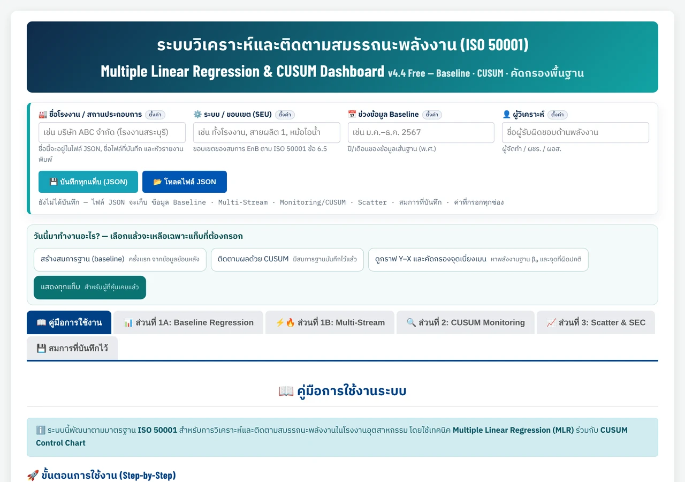
หน้าจอเครื่องมือ — เปิดได้จากเมนู Free ของเว็บไซต์
รุ่นเครื่องมือ: Free v4.4 commit 2bd313e · จับภาพ 18 พ.ย. 2569 · คู่มือ Rev02
เครื่องมือนี้ตอบคำถามอะไร
คู่มือใช้งาน · สมการฐานพลังงานและกราฟ CUSUM (EnMS MLR & CUSUM Dashboard) · ระดับ Free
2 / 34
| คำถามหน้างาน | ดูที่แท็บ | เคสโรงงาน A ได้ |
|---|---|---|
| พลังงานของโรงงานขึ้นกับอะไร เขียนเป็นสมการได้ไหม | ส่วนที่ 1A | 53023.7885 + 113.8729 × ผลผลิต + 55.0638 × CDD |
| สมการนี้เชื่อได้แค่ไหน | ส่วนที่ 1A | R² 0.9860 · CV(RMSE) 1.07 % |
| เดือนนี้ควรใช้พลังงานเท่าไร (Target) | ส่วนที่ 2 | เดือน 6801: 209,406.13 MJ |
| ทั้งปีประหยัดหรือสิ้นเปลืองสะสมเท่าไร | ส่วนที่ 2 (CUSUM) | -60,478.46 MJ (-2.26 %) |
| พลังงานฐาน ที่ต้องจ่ายแม้ผลิตน้อย เท่าไร | ส่วนที่ 3 | 56,263.52 MJ ต่อเดือน (≈ 26 %) |
| เดือนไหนหลุดจากแนวโน้ม | ส่วนที่ 3 (คัดกรอง) | เกณฑ์ ±2 %: 2 จุด |
💡 เคล็ดลับ
รุ่น Free: สมการรวมก้อนเดียว · CUSUM · กราฟ Y–X — การแยกไฟฟ้า/ความร้อน กราฟ SEC และการพยากรณ์อยู่ในระดับ Pro
แผนที่หน้าจอ
คู่มือใช้งาน · สมการฐานพลังงานและกราฟ CUSUM (EnMS MLR & CUSUM Dashboard) · ระดับ Free
3 / 34
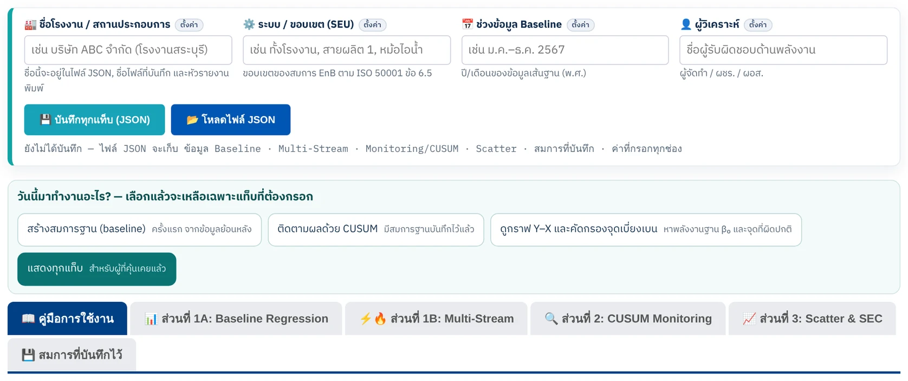
1
2
3
1
ข้อมูลโครงการ และปุ่ม บันทึกทุกแท็บ (JSON) / โหลดไฟล์ JSON
2
แถบเลือกงาน — กดแล้วเหลือเฉพาะแท็บที่ต้องใช้
3
แท็บ: คู่มือ · 1A สมการฐาน · 1B (Pro) · 2 CUSUM · 3 กราฟ Y–X · สมการที่บันทึกไว้
ลำดับงานครั้งแรก: 1A สร้างสมการ → บันทึกสมการ → 2 ติดตามผล
แท็บส่วนที่ 3 ใช้ดูพลังงานฐานและหาเดือนที่ผิดปกติ ทำก่อนหรือหลังสร้างสมการก็ได้
💡 เคล็ดลับ
มือใหม่กด "สร้างสมการฐาน (baseline)" ในแถบเลือกงานก่อน จะเห็นเฉพาะแท็บที่เกี่ยวข้อง
เปิดบนมือถือ และสลับภาษา
คู่มือใช้งาน · สมการฐานพลังงานและกราฟ CUSUM (EnMS MLR & CUSUM Dashboard) · ระดับ Free
4 / 34
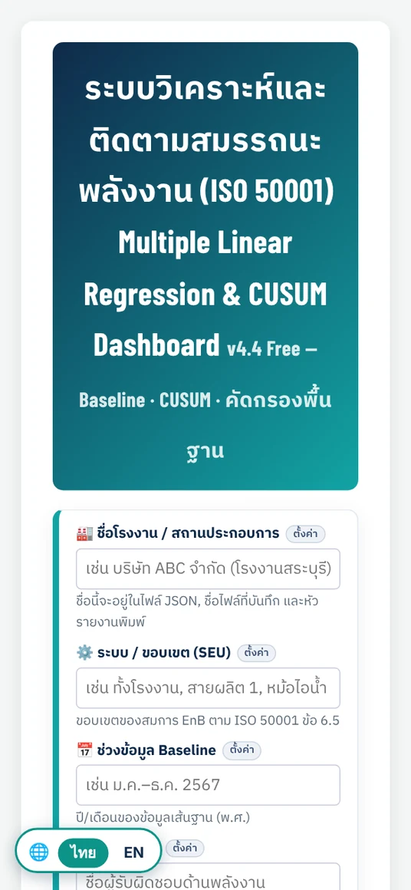
เปิดบนมือถือได้ แต่งานนี้เหมาะกับคอมพิวเตอร์ เพราะต้องเตรียมไฟล์ Excel และตารางกว้าง
ปุ่ม ไทย | EN ลอยอยู่ด้านล่าง กดสลับภาษาได้
ปุ่ม บันทึกทุกแท็บ (JSON) เก็บข้อมูล สมการ และผลติดตามไว้ในไฟล์เดียว เปิดต่อได้ภายหลัง
สมการที่บันทึกในแท็บ "สมการที่บันทึกไว้" อยู่ในเบราว์เซอร์ของเครื่องนั้นเท่านั้น
⚠️ ระวัง
ล้างประวัติเบราว์เซอร์แล้วสมการที่บันทึกไว้จะหาย — ส่งออกเป็นไฟล์ JSON เก็บไว้เสมอ
คำศัพท์ 8 คำที่ต้องรู้ก่อนเริ่ม
คู่มือใช้งาน · สมการฐานพลังงานและกราฟ CUSUM (EnMS MLR & CUSUM Dashboard) · ระดับ Free
5 / 34
| คำ | ความหมายแบบสั้น | จำง่าย ๆ |
|---|---|---|
| เส้นฐานพลังงาน (Baseline) | การใช้พลังงานในช่วงอ้างอิง ใช้เทียบกับช่วงหลัง | ปีก่อนทำมาตรการ |
| Y · X · สมการ | Y = พลังงาน · X = สิ่งที่ทำให้พลังงานเปลี่ยน · Y = β₀ + β₁X₁ + β₂X₂ | β₀ = พลังงานฐาน |
| R² | สมการอธิบายการขึ้นลงของ Y ได้กี่ส่วน (0 ถึง 1) | ยิ่งใกล้ 1 ยิ่งดี |
| P-value | โอกาสที่ตัวแปรนั้นไม่มีผลจริง | ต่ำกว่า 0.05 = เก็บไว้ |
| CV(RMSE) | ความคลาดเคลื่อนเฉลี่ยของสมการ คิดเป็น % ของค่าเฉลี่ย | ยิ่งต่ำยิ่งแม่น |
| Target · Variance | Target = พลังงานที่สมการคาดไว้ · Variance = ใช้จริง − Target | ติดลบ = ใช้น้อยกว่าคาด |
| CUSUM | ผลรวมสะสมของ Variance ทีละเดือน | เส้นลง = ประหยัดสะสม |
| CDD | Cooling Degree Days — ตัวเลขบอกว่าเดือนนั้นอากาศร้อนแค่ไหน | ร้อนมาก ระบบปรับอากาศกินไฟมาก |
💡 เคล็ดลับ
MLR = Multiple Linear Regression คือสมการเส้นตรงที่มี X มากกว่าหนึ่งตัว
เตรียมไฟล์ Excel ก่อนเริ่ม
คู่มือใช้งาน · สมการฐานพลังงานและกราฟ CUSUM (EnMS MLR & CUSUM Dashboard) · ระดับ Free
6 / 34
| คอลัมน์ | หัวคอลัมน์ในไฟล์ตัวอย่าง | ใส่อะไร |
|---|---|---|
| A | Period | รหัสเดือน เช่น 6701 = ม.ค. 2567 |
| B | Electrical_Energy(kWh) | พลังงานไฟฟ้าของเดือนนั้น จากใบแจ้งค่าไฟหรือมิเตอร์ |
| C | Heat_Energy(MJ) | พลังงานความร้อนจากเชื้อเพลิง แปลงเป็น MJ แล้ว |
| D | Total_Energy(MJ) | รวม = kWh × 3.6 + ความร้อน (MJ) |
| E | Production (unit) | ปริมาณผลผลิตของเดือนนั้น |
| F | CDD(Degree) | Cooling Degree Days ของเดือนนั้น |
| G – I | Downtime · Reject_Rate · Etc. | ตัวแปรอื่นที่อยากทดสอบ (ไม่มีให้เว้นว่าง) |
แถวที่ 1 ต้องเป็นหัวคอลัมน์ เครื่องมือจะนำชื่อไปแสดงในสมการ
ไฟล์ฐานควรมีอย่างน้อย 12 เดือน · ไฟล์ติดตามผลใช้คอลัมน์ชุดเดียวกัน เรียงลำดับเดิม
⚠️ ระวัง
เครื่องมืออ่านตัวแปรตามตำแหน่งคอลัมน์ E–I — ไฟล์ติดตามผลเรียงคอลัมน์ต่างจากไฟล์ฐาน ค่า Target จะผิด
ดาวน์โหลดไฟล์ตัวอย่างจากแท็บคู่มือ
คู่มือใช้งาน · สมการฐานพลังงานและกราฟ CUSUM (EnMS MLR & CUSUM Dashboard) · ระดับ Free
7 / 34
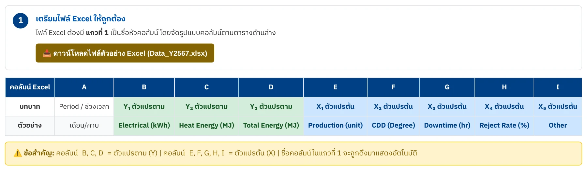
1
2
1
ผังคอลัมน์ A–I: เขียว = Y (พลังงาน) · ฟ้า = X (ตัวแปร)
2
ปุ่ม ดาวน์โหลดไฟล์ตัวอย่าง Excel — ได้ไฟล์ 12 เดือนที่จัดคอลัมน์ถูกแล้ว
คู่มือนี้ใช้ไฟล์ตัวอย่างของเครื่องมือเป็นข้อมูลฐานปี 2567 ของโรงงาน A
วิธีเร็วที่สุด: ดาวน์โหลดไฟล์ตัวอย่าง แล้วพิมพ์ข้อมูลของโรงงานทับลงไป
💡 เคล็ดลับ
ข้อมูลในไฟล์ตัวอย่างเป็นข้อมูลสมมุติ ใช้ฝึกได้ทันที
ขั้นที่ 1
ส่วนที่ 1A: เลือก Y แล้วอัปโหลดไฟล์ฐาน
คู่มือใช้งาน · สมการฐานพลังงานและกราฟ CUSUM (EnMS MLR & CUSUM Dashboard) · ระดับ Free
8 / 34
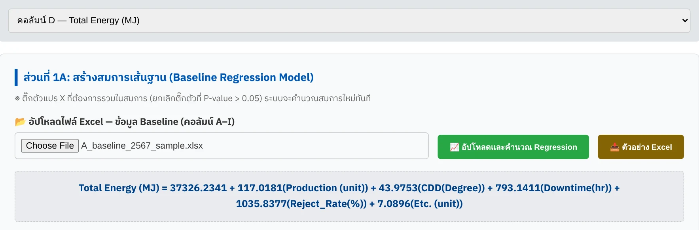
1
2
3
4
1
เลือก Y: คอลัมน์ D — Total Energy (MJ)
2
Choose File เลือกไฟล์ฐาน 12 เดือน
3
กด อัปโหลดและคำนวณ Regression
4
ได้สมการทันที (ยังเป็นสมการเต็ม 5 ตัวแปร)
สมการเต็ม: Total Energy (MJ) = 37326.2341 + 117.0181(Production (unit)) + 43.9753(CDD(Degree)) + 793.1411(Downtime(hr)) + 1035.8377(Reject_Rate(%)) + 7.0896(Etc. (unit))
ยังไม่จบ — ต้องตรวจว่าตัวแปรแต่ละตัวมีผลจริงหรือไม่ (ขั้นที่ 2)
ขั้นที่ 2
อ่านตารางสถิติของสมการเต็ม
คู่มือใช้งาน · สมการฐานพลังงานและกราฟ CUSUM (EnMS MLR & CUSUM Dashboard) · ระดับ Free
9 / 34
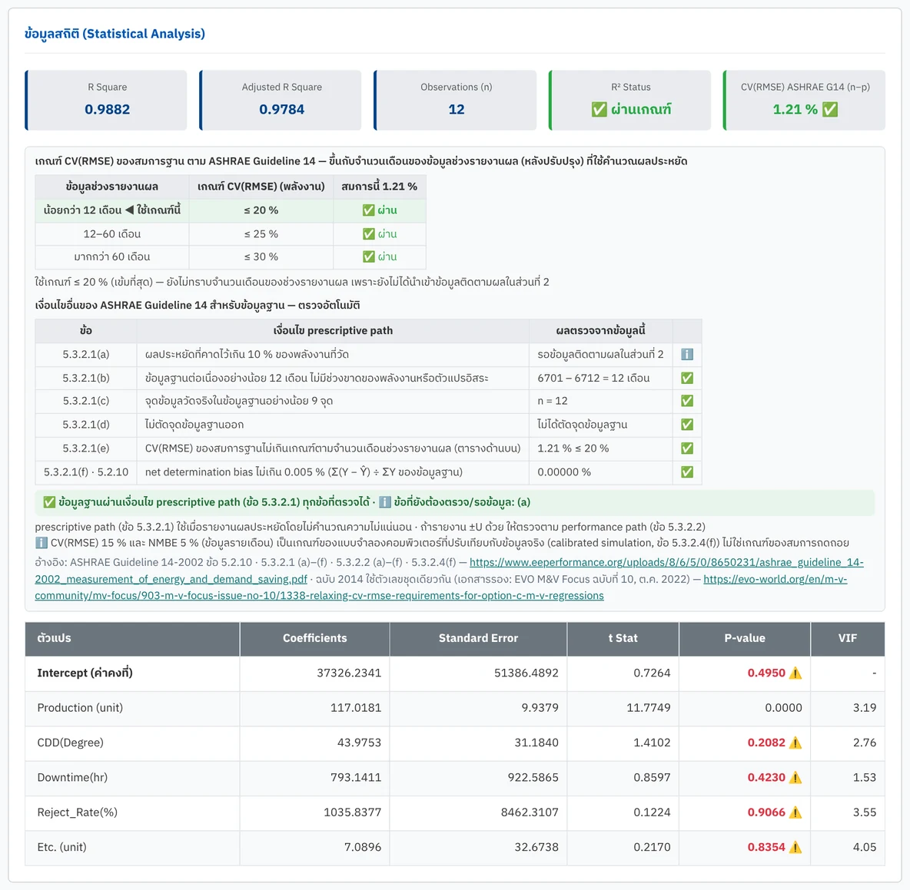
1
2
3
4
5
6
1
R² 0.9882 · Adjusted R² 0.9784 · จำนวนข้อมูล 12 เดือน
2
CV(RMSE) 1.21 % — เกณฑ์สมการฐาน ASHRAE Guideline 14: ≤ 20 % เมื่อข้อมูลช่วงรายงานผลน้อยกว่า 12 เดือน
3
P-value: ตัวแดงมีเครื่องหมายเตือน = มากกว่า 0.05
4
ตารางเกณฑ์ 3 ระดับ: < 12 เดือน ≤ 20 % · 12–60 เดือน ≤ 25 % · > 60 เดือน ≤ 30 % — ยังไม่นำเข้าข้อมูลติดตามผล จึงใช้ 20 % (เข้มสุด)
5
เงื่อนไขอื่นของ ASHRAE Guideline 14 ตรวจอัตโนมัติ: ฐาน 6701–6712 = 12 เดือนต่อเนื่อง · n = 12 จุด · ไม่ตัดจุดฐาน · net determination bias
6
คำตัดสิน: ผ่านเงื่อนไข prescriptive path ทุกข้อที่ตรวจได้ — ข้อ (a) ผลประหยัด > 10 % รอข้อมูลส่วนที่ 2
R² สูงมาก แต่มีตัวแปร 4 จาก 5 ตัว ที่ P-value เกิน 0.05
ตัวที่ P-value สูงสุดคือ Reject_Rate(%) (0.9066) — ตัดตัวนี้ก่อน
นำเข้าข้อมูลติดตามผลในส่วนที่ 2 แล้ว เครื่องมือเลือกเกณฑ์ตามจำนวนเดือนให้เอง (เคสนี้ 12 เดือน → ≤ 25 %) · 15 % เป็นเกณฑ์ของ calibrated simulation ไม่ใช่สมการถดถอย
ตารางเงื่อนไขอ้างข้อ 5.3.2.1 (a)–(f) ของ ASHRAE Guideline 14-2002 พร้อม URL บนจอ — ผู้ทวนสอบเปิดตามได้
⚠️ ระวัง
R² สูงอย่างเดียวยังไม่พอ — ตัวแปรที่ไม่มีผลจริงทำให้สมการทำนายเดือนใหม่ได้แย่ลง
ขั้นที่ 3
ตัดตัวแปรที่ P-value สูงสุดออกทีละตัว
คู่มือใช้งาน · สมการฐานพลังงานและกราฟ CUSUM (EnMS MLR & CUSUM Dashboard) · ระดับ Free
10 / 34
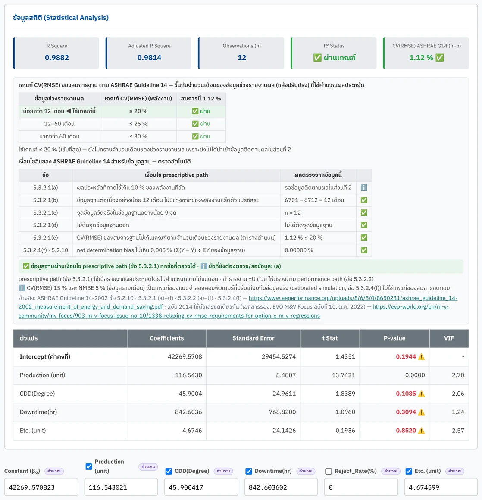
1
2
1
เอาเครื่องหมายถูกออก จากตัวแปรที่จะตัด — เครื่องมือคำนวณสมการใหม่ทันที
2
อ่าน P-value รอบใหม่ แล้วหาตัวที่สูงสุดอีกครั้ง
หลังตัด Reject_Rate: เหลือ 4 ตัวแปร · ตัวที่ P-value สูงสุดกลายเป็น Etc. (unit) (0.8520)
ทำซ้ำจนไม่เหลือตัวแดง
💡 เคล็ดลับ
ตัดทีละตัวเท่านั้น — ทุกครั้งที่ตัด P-value ของตัวที่เหลือจะเปลี่ยน
ผลของการตัดทีละรอบ (โรงงาน A)
คู่มือใช้งาน · สมการฐานพลังงานและกราฟ CUSUM (EnMS MLR & CUSUM Dashboard) · ระดับ Free
11 / 34
| รอบ | ตัวแปรที่เหลือ | ตัวที่ P-value สูงสุด | P-value ของ CDD | Adj. R² | CV(RMSE) |
|---|---|---|---|---|---|
| เริ่ม | 5 ตัว | Reject_Rate(%) (0.9066) | 0.2082 | 0.9784 | 1.21 % |
| 1 | 4 ตัว | Etc. (unit) (0.8520) | 0.1085 | 0.9814 | 1.12 % |
| 2 | 3 ตัว | Downtime(hr) (0.2713) | 0.0578 | 0.9837 | 1.05 % |
| 3 | 2 ตัว | ไม่มี | 0.0285 | 0.9829 | 1.07 % |
CDD เริ่มต้นไม่ผ่าน (0.2082) แต่ผ่านในรอบสุดท้าย (0.0285) — ถ้าตัดทุกตัวแดงพร้อมกันตั้งแต่แรก จะเสีย CDD ไปโดยไม่ควร
R² ลดเล็กน้อยจาก 0.9882 เป็น 0.9860 แต่ Adjusted R² สูงขึ้น จาก 0.9784 เป็น 0.9829 — สมการสั้นลงและดีขึ้น
💡 เคล็ดลับ
เทียบสมการคนละจำนวนตัวแปร ให้ดู Adjusted R² และ CV(RMSE) ไม่ใช่ R² อย่างเดียว
ขั้นที่ 4
สมการสุดท้ายของโรงงาน A
คู่มือใช้งาน · สมการฐานพลังงานและกราฟ CUSUM (EnMS MLR & CUSUM Dashboard) · ระดับ Free
12 / 34
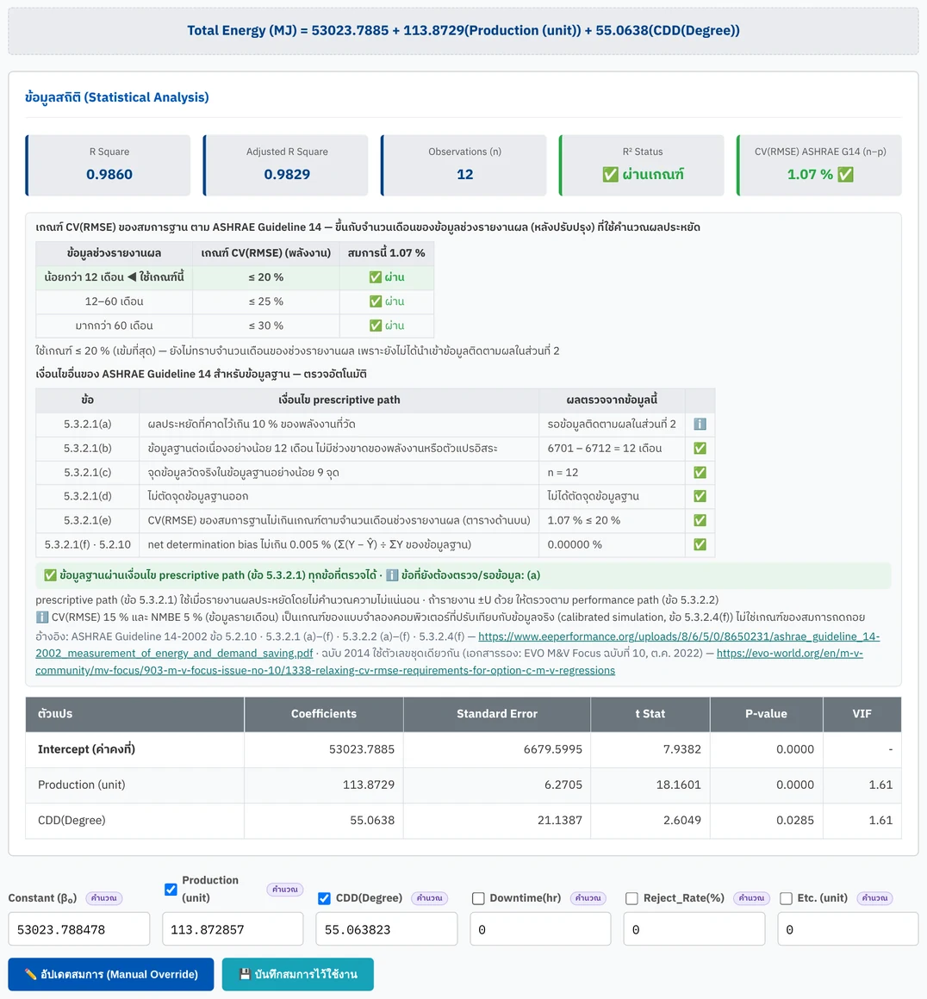
1
2
3
4
1
Total Energy (MJ) = 53023.7885 + 113.8729(Production (unit)) + 55.0638(CDD(Degree))
2
P-value ผ่านทุกตัว · VIF 1.61 (เครื่องมือเตือนเมื่อ VIF เกิน 10)
3
ตัวแปรที่ตัดออก สัมประสิทธิ์เป็น 0
4
กด บันทึกสมการไว้ใช้งาน
อ่านสมการ: พลังงานฐาน 53023.7885 MJ ต่อเดือน · ผลิตเพิ่ม 1 หน่วย ใช้เพิ่ม 113.8729 MJ · CDD เพิ่ม 1 ใช้เพิ่ม 55.0638 MJ
R² 0.9860 · Adjusted R² 0.9829 · CV(RMSE) 1.07 %
ขั้นที่ 5
ตั้งชื่อและบันทึกสมการ
คู่มือใช้งาน · สมการฐานพลังงานและกราฟ CUSUM (EnMS MLR & CUSUM Dashboard) · ระดับ Free
13 / 34
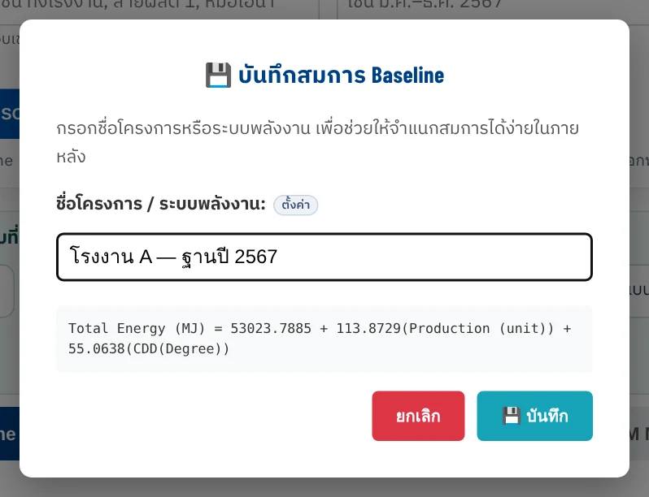
1
2
1
ตั้งชื่อให้รู้ว่าเป็นของที่ไหน ปีไหน
2
ตรวจสมการที่จะบันทึก แล้วกด บันทึก
ชื่อที่ดี: บอกสถานที่ ระบบ และปีของข้อมูลฐาน เช่น "โรงงาน A — ฐานปี 2567"
บันทึกได้หลายสมการ เช่น แยกตามอาคาร หรือแยกตามชนิดพลังงาน
แท็บสมการที่บันทึกไว้
คู่มือใช้งาน · สมการฐานพลังงานและกราฟ CUSUM (EnMS MLR & CUSUM Dashboard) · ระดับ Free
14 / 34
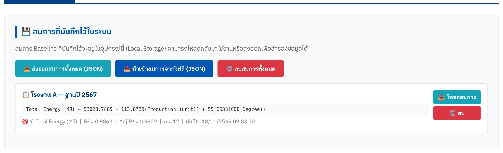
1
2
3
1
สมการที่บันทึก พร้อม R² · Adj. R² · จำนวนข้อมูล · วันเวลาที่บันทึก
2
โหลดสมการ กลับมาใช้ในส่วนที่ 2 · ลบ
3
ส่งออกสมการทั้งหมด (JSON) เก็บเป็นไฟล์สำรอง
เดือนถัดไปเปิดเครื่องมือ → แท็บนี้ → กด โหลดสมการ → ไปส่วนที่ 2 ได้เลย ไม่ต้องสร้างสมการใหม่
⚠️ ระวัง
สมการเก็บในเบราว์เซอร์ของเครื่องนี้เท่านั้น — เปลี่ยนเครื่องหรือล้างเบราว์เซอร์ต้องนำเข้าจากไฟล์ JSON
ขั้นที่ 6
ส่วนที่ 2: อัปโหลดไฟล์ติดตามผล
คู่มือใช้งาน · สมการฐานพลังงานและกราฟ CUSUM (EnMS MLR & CUSUM Dashboard) · ระดับ Free
15 / 34
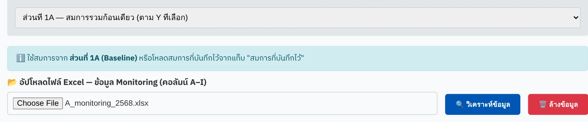
1
2
3
1
แหล่งสมการ: ส่วนที่ 1A (รุ่น Free มีแหล่งเดียว)
2
Choose File เลือกไฟล์ข้อมูลช่วงติดตามผล (ปี 2568)
3
กด วิเคราะห์ข้อมูล
ไฟล์ติดตามผลใช้คอลัมน์ชุดเดียวกับไฟล์ฐาน เพิ่มทีละเดือนแล้วอัปโหลดซ้ำได้
เครื่องมือนำ X ของแต่ละเดือนไปแทนในสมการ ได้ Target แล้วเทียบกับค่าที่ใช้จริง
⚠️ ระวัง
ยังไม่มีสมการฐาน เครื่องมือจะไม่คำนวณและแจ้งให้ไปสร้างหรือโหลดสมการก่อน
ขั้นที่ 7
อ่านตารางติดตามผลรายเดือน
คู่มือใช้งาน · สมการฐานพลังงานและกราฟ CUSUM (EnMS MLR & CUSUM Dashboard) · ระดับ Free
16 / 34
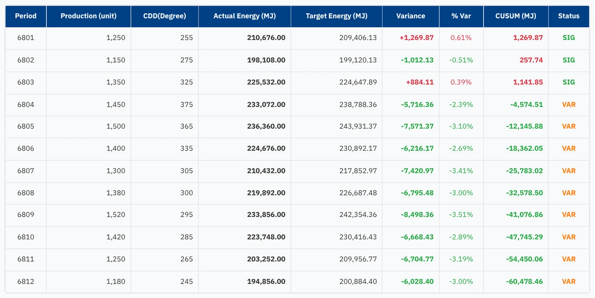
1
2
3
4
5
1
Actual = พลังงานที่ใช้จริง
2
Target = ค่าที่สมการคาดไว้จาก X ของเดือนนั้น
3
Variance = Actual − Target · แดง = ใช้มากกว่า · เขียว = ใช้น้อยกว่า
4
CUSUM = Variance สะสม
5
Status ตามขนาดของ % Var
เดือน 6801: ผลิต 1,250 หน่วย CDD 255 → Target 209,406.13 · ใช้จริง 210,676.00 → Variance +1,269.87 MJ (0.61%) → SIG
เดือน 6805: Target 243,931.37 · ใช้จริง 236,360.00 → Variance -7,571.37 MJ (-3.10%) → VAR
💡 เคล็ดลับ
ภาพนี้ซ่อนคอลัมน์ X3–X5 ที่ไม่อยู่ในสมการ เพื่อให้เห็นคอลัมน์ Status — บนจอจริงเลื่อนตารางไปทางขวา
ขั้นที่ 8
สรุปช่วงติดตาม: ผลประหยัด ± ความไม่แน่นอน
คู่มือใช้งาน · สมการฐานพลังงานและกราฟ CUSUM (EnMS MLR & CUSUM Dashboard) · ระดับ Free
17 / 34
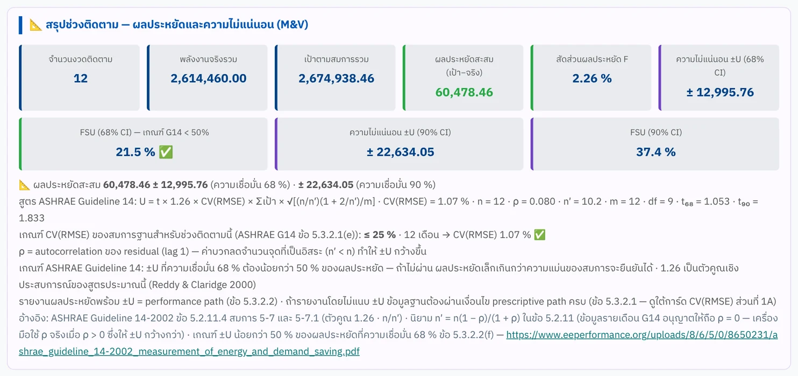
1
2
3
4
1
ผลประหยัดสะสม (เป้า − จริง) = 60,478.46 MJ · สัดส่วน F = 2.26 %
2
ความไม่แน่นอน ±U ที่ความเชื่อมั่น 68 % = ± 12,995.76 MJ (ที่ 90 % = ± 22,634.05)
3
FSU (68 %) = ±U ÷ ผลประหยัด = 21.5 % ✅ — เกณฑ์ ASHRAE G14: น้อยกว่า 50 %
4
ค่าที่ใช้ในสูตร ตรวจมือได้: CV(RMSE) = 1.07 % · n = 12 · ρ = 0.080 · n′ = 10.2 · m = 12 · df = 9 · t₆₈ = 1.053 · t₉₀ = 1.833
สูตร ASHRAE Guideline 14 ข้อ 5.2.11.4: U = t × 1.26 × CV(RMSE) × Σเป้า × √[(n/n′)(1 + 2/n′)/m]
FSU 21.5 % ✅ → ผลประหยัด 60,478.46 MJ ใหญ่กว่าความคลาดเคลื่อนของสมการพอที่จะยืนยันได้
ถ้า FSU เกิน 50 % แปลว่าผลประหยัดเล็กเกินกว่าความแม่นของสมการจะยืนยันได้ — ต้องเก็บข้อมูลเพิ่มหรือปรับสมการ
💡 เคล็ดลับ
รายงานผลประหยัดพร้อม ±U = performance path ของ G14 (ข้อ 5.3.2.2) · ถ้าไม่แนบ ±U ข้อมูลฐานต้องผ่านเงื่อนไข prescriptive path ครบ (ดูขั้นที่ 2)
ขั้นที่ 9
อ่านกราฟ CUSUM
คู่มือใช้งาน · สมการฐานพลังงานและกราฟ CUSUM (EnMS MLR & CUSUM Dashboard) · ระดับ Free
18 / 34
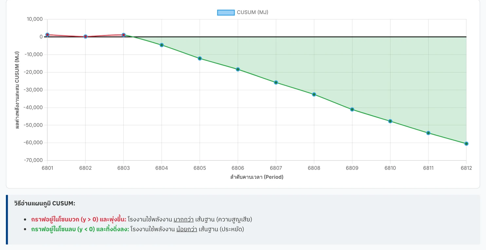
3 เดือนแรกเส้นเกาะเส้นศูนย์ (CUSUM เดือน 6803 = 1,141.85 MJ) — ใช้พลังงานตามสมการฐาน
ตั้งแต่เดือน 6804 เส้นลาดลงต่อเนื่อง — เริ่มใช้น้อยกว่าเส้นฐานทุกเดือน
สิ้นปี CUSUM = -60,478.46 MJ จาก Target รวม 2,674,938 MJ คิดเป็น -2.26 %
จุดที่เส้นเปลี่ยนความชัน คือเดือนที่มีบางอย่างเปลี่ยน — กลับไปถามหน้างานว่าเดือนนั้นทำอะไร
💡 เคล็ดลับ
เส้นลง = ประหยัดสะสม · เส้นขึ้น = สิ้นเปลืองสะสม · เส้นราบ = เท่าเส้นฐาน
สถานะ SIG · VAR · OUT อ่านอย่างไร
คู่มือใช้งาน · สมการฐานพลังงานและกราฟ CUSUM (EnMS MLR & CUSUM Dashboard) · ระดับ Free
19 / 34
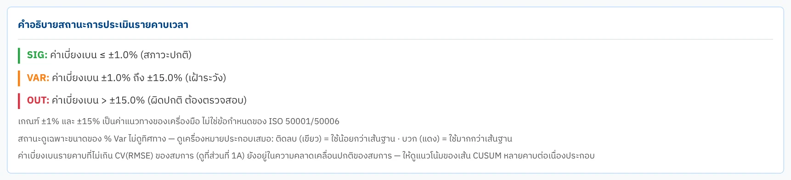
โรงงาน A ปี 2568: SIG 3 เดือน · VAR 9 เดือน · OUT 0 เดือน — ไม่ขึ้นแถบเตือน
สถานะดูขนาดของ % Var เท่านั้น ไม่ดูทิศทาง — VAR ทั้ง 9 เดือนของเคสนี้เป็นค่าติดลบ (ประหยัด)
เทียบกับ CV(RMSE) ของสมการ (1.07 %): เดือน 6805 เบี่ยง -3.10% มากกว่าความคลาดเคลื่อนของสมการชัดเจน และเกิดต่อเนื่องหลายเดือน จึงเป็นการเปลี่ยนแปลงจริง
⚠️ ระวัง
เกณฑ์ ±1 % และ ±15 % เป็นค่าแนวทางของเครื่องมือ ไม่ใช่ข้อกำหนดของ ISO 50001/50006
ถ้าเครื่องจักรมีปัญหา 3 เดือน กราฟจะบอกอย่างไร
คู่มือใช้งาน · สมการฐานพลังงานและกราฟ CUSUM (EnMS MLR & CUSUM Dashboard) · ระดับ Free
20 / 34
| รายการ | ปี 2568 ปกติ | ปี 2568 มีปัญหาเดือน 6806–6808 |
|---|---|---|
| % Var เดือน 6806 · 6807 · 6808 | -2.69% · -3.41% · -3.00% | 18.23% · 20.26% · 18.83% |
| จำนวนเดือน SIG · VAR · OUT | 3 · 9 · 0 | 3 · 6 · 3 |
| แถบเตือนสีแดง | ไม่ขึ้นแถบเตือน | ขึ้นแถบเตือน |
| CUSUM เดือน 6808 | -32,578.50 MJ | 116,756.90 MJ |
| CUSUM สิ้นปี | -60,478.46 MJ (-2.26 %) | 88,856.94 MJ (3.32 %) |
OUT ติดต่อกันตั้งแต่ 3 เดือน เครื่องมือขึ้นแถบเตือนสีแดง ให้ตรวจข้อมูลและเครื่องจักร แล้วหาสาเหตุ
ปัญหา 3 เดือนกลบผลประหยัดของทั้งปี — CUSUM สิ้นปีพลิกจากติดลบเป็นบวก
💡 เคล็ดลับ
ไฟล์ฝึกของกรณีนี้: A_monitoring_2568_fault.xlsx (ข้อมูลแต่งขึ้น ส่งมาพร้อมคู่มือ)
ขั้นที่ 10
ส่วนที่ 3: เลือกข้อมูลและแกนของกราฟ Y–X
คู่มือใช้งาน · สมการฐานพลังงานและกราฟ CUSUM (EnMS MLR & CUSUM Dashboard) · ระดับ Free
21 / 34
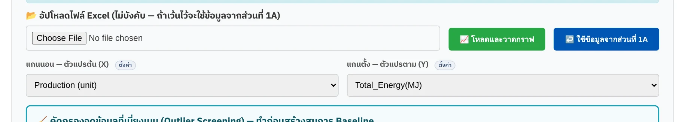
1
2
3
1
กด ใช้ข้อมูลจากส่วนที่ 1A (หรืออัปโหลดไฟล์เฉพาะส่วนนี้)
2
แกนนอน X: Production (unit)
3
แกนตั้ง Y: Total_Energy(MJ)
กราฟนี้ดู Y กับ X ทีละตัว ต่างจากส่วนที่ 1A ที่ใช้หลายตัวแปรพร้อมกัน
เปลี่ยน X เป็น CDD หรือตัวแปรอื่นเพื่อดูว่าตัวไหนสัมพันธ์กับพลังงานชัดที่สุด
ขั้นที่ 11
อ่านกราฟ Y–X: พลังงานฐานและความชัน
คู่มือใช้งาน · สมการฐานพลังงานและกราฟ CUSUM (EnMS MLR & CUSUM Dashboard) · ระดับ Free
22 / 34
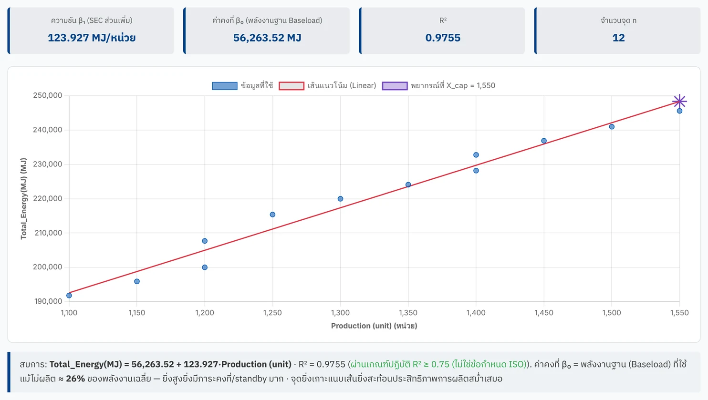
1
2
3
1
ความชัน 123.927 MJ ต่อหน่วย · พลังงานฐาน 56,263.52 MJ · R² 0.9755 · 12 จุด
2
จุด = ข้อมูลรายเดือน · เส้นแดง = แนวโน้ม · ดาวม่วง = ค่าบนเส้นที่ผลผลิตสูงสุดของข้อมูล
3
พลังงานฐานคิดเป็น ≈ 26 % ของพลังงานเฉลี่ย
พลังงานฐาน คือจุดที่เส้นตัดแกนตั้ง — พลังงานที่ใช้แม้ผลิตน้อยมาก เช่น แสงสว่าง ลมรั่ว เครื่องเดินตัวเปล่า
จุดเกาะเส้น = ประสิทธิภาพสม่ำเสมอ · จุดลอยเหนือเส้น = เดือนนั้นใช้มากกว่าปกติ
💡 เคล็ดลับ
ตัวเลขต่างจากสมการ 1A เพราะกราฟนี้ใช้ X ตัวเดียว ไม่มี CDD ช่วยอธิบาย
ขั้นที่ 12
คัดกรองจุดที่หลุดจากแนวโน้ม
คู่มือใช้งาน · สมการฐานพลังงานและกราฟ CUSUM (EnMS MLR & CUSUM Dashboard) · ระดับ Free
23 / 34
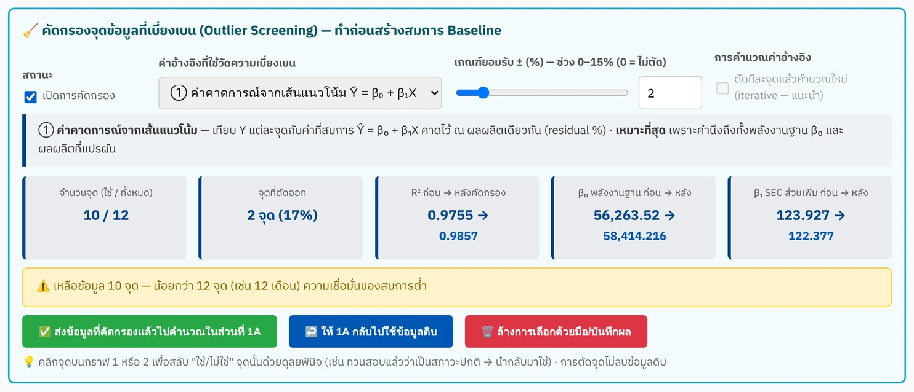
1
2
3
4
5
1
ติ๊ก เปิดการคัดกรอง
2
ตั้งเกณฑ์ยอมรับ ± % (ตัวอย่างนี้ 2 %)
3
ใช้ 10 จาก 12 จุด · ตัด 2 จุด · R² 0.9755 → 0.9857
4
คำเตือน: ข้อมูลเหลือน้อยกว่า 12 จุด
5
ปุ่มส่งข้อมูลที่คัดกรองแล้วไปคำนวณในส่วนที่ 1A
ตัดจุดแล้ว R² ดีขึ้นเสมอ — แต่ตัดได้เฉพาะเดือนที่รู้สาเหตุว่าไม่ใช่การเดินงานปกติ เช่น หยุดซ่อมใหญ่ มิเตอร์เสีย
⚠️ ระวัง
เคสโรงงาน A ไม่มีสาเหตุรองรับ จึงไม่กดส่งข้อมูลที่คัดกรองไปส่วนที่ 1A — ใช้ข้อมูลครบ 12 เดือน
จุดที่ถูกคัดออกบนกราฟ
คู่มือใช้งาน · สมการฐานพลังงานและกราฟ CUSUM (EnMS MLR & CUSUM Dashboard) · ระดับ Free
24 / 34
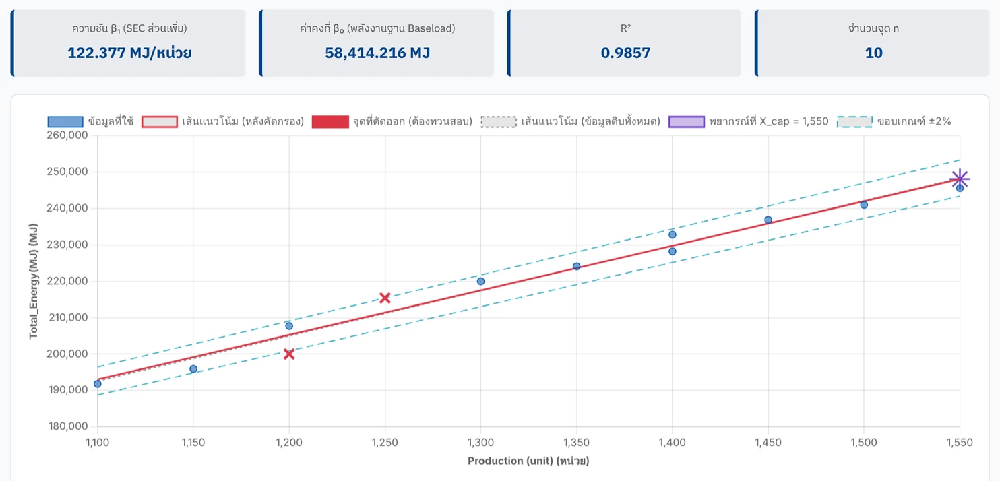
เส้นประสีฟ้า = ขอบเกณฑ์ ±2 % รอบเส้นแนวโน้ม
กากบาทสีแดง = จุดที่หลุดเกณฑ์ ต้องนำไปทวนสอบกับหน้างาน
คลิกที่จุดบนกราฟเพื่อสลับ ใช้ / ไม่ใช้ จุดนั้นด้วยตัวเองได้
หลังคัดกรอง พลังงานฐานเปลี่ยนเป็น 58,414.216 MJ · ข้อมูลดิบไม่ถูกลบ กดกลับได้เสมอ
💡 เคล็ดลับ
รายงานจุดเบี่ยงเบนและการส่งออก Excel สำหรับทวนสอบหน้างาน อยู่ในระดับ Pro
ถ้าตั้งเกณฑ์คัดกรองต่างกัน
คู่มือใช้งาน · สมการฐานพลังงานและกราฟ CUSUM (EnMS MLR & CUSUM Dashboard) · ระดับ Free
25 / 34
| เกณฑ์ยอมรับ | จุดที่ใช้ / ทั้งหมด | จุดที่ตัด | R² ก่อน → หลัง | คำเตือนของเครื่องมือ |
|---|---|---|---|---|
| ± 1 % | 5 / 12 | 7 | 0.9755 → 0.9969 | ตัดเกิน 20 % ของข้อมูล และเหลือน้อยกว่า 12 จุด |
| ± 2 % | 10 / 12 | 2 | 0.9755 → 0.9857 | เหลือน้อยกว่า 12 จุด |
| ± 5 % | 12 / 12 | 0 | 0.9755 → 0.9755 | ไม่มี |
| ± 10 % | 12 / 12 | 0 | 0.9755 → 0.9755 | ไม่มี |
เกณฑ์แคบเกินไปตัดข้อมูลดีทิ้ง — R² สูงขึ้นแต่สมการเหลือข้อมูลไม่พอ
ข้อมูลของโรงงาน A เกาะเส้นดีอยู่แล้ว เกณฑ์ ±5 % ขึ้นไปไม่มีจุดหลุด
⚠️ ระวัง
อย่าปรับเกณฑ์เพื่อให้ R² สวย — ทุกจุดที่ตัดต้องมีเหตุผลจากหน้างาน
ถ้ากดส่งข้อมูลที่คัดกรองแล้วไปส่วนที่ 1A (กรณีสาธิต)
คู่มือใช้งาน · สมการฐานพลังงานและกราฟ CUSUM (EnMS MLR & CUSUM Dashboard) · ระดับ Free
26 / 34
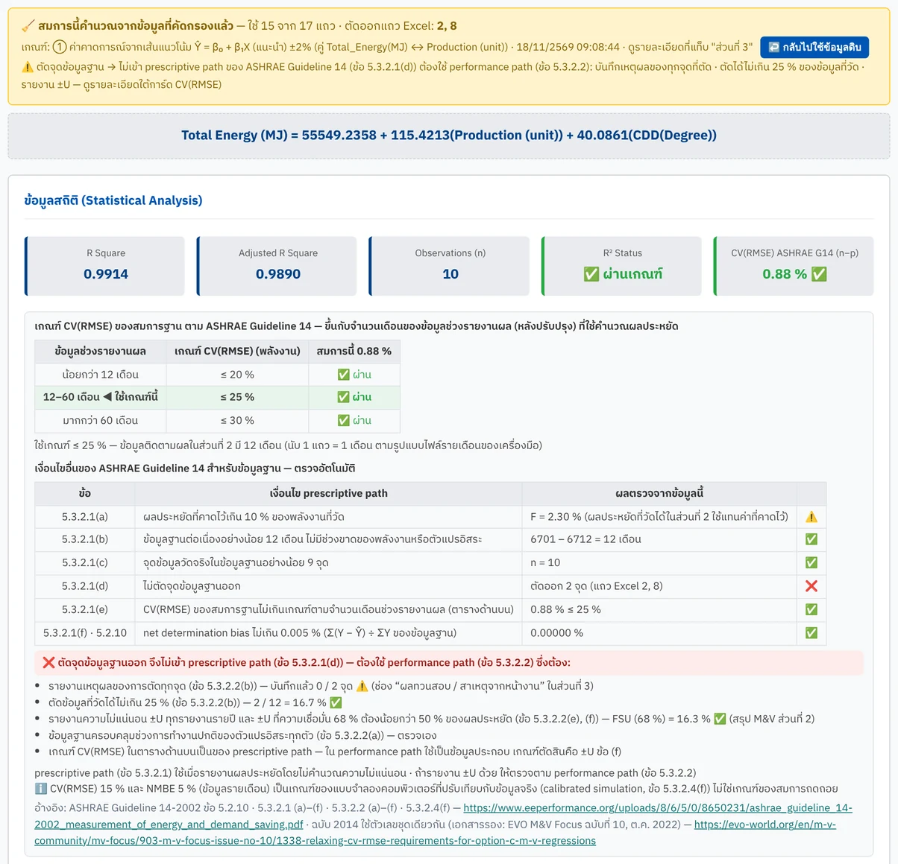
1
2
3
4
1
แถบบอกว่าสมการคำนวณจากข้อมูลที่คัดกรอง และเตือนว่าไม่เข้า prescriptive path
2
ข้อ (d) ตัดออก 2 จุด (แถว Excel 2, 8) ขึ้น ❌ · n เหลือ 10 จุด
3
คำตัดสิน: ต้องใช้ performance path (ข้อ 5.3.2.2)
4
สิ่งที่ต้องทำ: บันทึกเหตุผลทุกจุด (บันทึกแล้ว 0 / 2) · ตัดไม่เกิน 25 % (2 / 12 = 16.7 %) · FSU (68 %) = 16.3 %
ASHRAE Guideline 14 ข้อ 5.3.2.1(d): ใน prescriptive path ห้ามตัดจุดข้อมูลฐาน
ตัดจุดแล้วต้องใช้ performance path: รายงานเหตุผลของการตัด ตัดได้ไม่เกิน 25 % ของข้อมูลที่วัด และรายงาน ±U ที่ความเชื่อมั่น 68 % ซึ่งต้องน้อยกว่า 50 % ของผลประหยัด
กรอกเหตุผลที่ช่อง ผลทวนสอบ / สาเหตุจากหน้างาน ในตารางของส่วนที่ 3 เครื่องมือนับให้
⚠️ ระวัง
กรณีนี้เป็นการสาธิตเท่านั้น — โรงงาน A ไม่มีสาเหตุรองรับการตัดจุด จึงใช้ข้อมูลครบ 12 เดือนในขั้นอื่นทั้งหมด
ถ้าเลือก Y ต่างกัน (สมการเต็ม 5 ตัวแปร)
คู่มือใช้งาน · สมการฐานพลังงานและกราฟ CUSUM (EnMS MLR & CUSUM Dashboard) · ระดับ Free
27 / 34
| Y ที่เลือก | R² | Adj. R² | CV(RMSE) | ค่าคงที่ β₀ | ตัวแปรที่ P-value > 0.05 |
|---|---|---|---|---|---|
| คอลัมน์ D — Total (MJ) | 0.9882 | 0.9784 | 1.21 % | 37326.2341 | 4 ตัว |
| คอลัมน์ B — ไฟฟ้า (kWh) | 0.9847 | 0.9719 | 1.34 % | 11946.1081 | 4 ตัว |
| คอลัมน์ C — ความร้อน (MJ) | 0.9921 | 0.9856 | 1.24 % | -5679.7550 | 4 ตัว |
เปลี่ยน Y แล้วต้องกด อัปโหลดและคำนวณ Regression ใหม่ และตัดตัวแปรใหม่ทุกครั้ง
สมการความร้อนแบบเต็มได้ค่าคงที่ติดลบ — พลังงานฐานติดลบไม่มีความหมายทางกายภาพ เป็นสัญญาณว่ายังมีตัวแปรที่ไม่ควรอยู่ในสมการ
💡 เคล็ดลับ
อยากได้สมการไฟฟ้าและความร้อนแยกกันพร้อม CUSUM เป็นบาท ใช้ส่วนที่ 1B ในระดับ Pro
คำเตือน: ไฟล์ติดตามผลเรียงคอลัมน์ไม่ตรงกับสมการ
คู่มือใช้งาน · สมการฐานพลังงานและกราฟ CUSUM (EnMS MLR & CUSUM Dashboard) · ระดับ Free
28 / 34
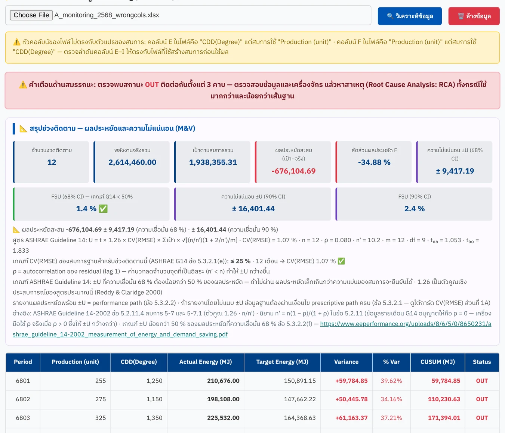
1
1
เครื่องมือบอกว่าคอลัมน์ไหนไม่ตรง กับตัวแปรของสมการ
ตัวอย่าง: สลับคอลัมน์ E กับ F — Target เดือน 6801 กลายเป็น 150,891.15 MJ (ค่าที่ถูกคือ 209,406.13)
% Var เดือน 6801 กลายเป็น 39.62% สถานะ OUT ทั้งที่โรงงานไม่ได้ผิดปกติ
เห็นกรอบเหลืองนี้ ให้แก้ลำดับคอลัมน์ E–I ในไฟล์ให้ตรงกับไฟล์ฐาน แล้วอัปโหลดใหม่
⚠️ ระวัง
ทุกเดือนขึ้น OUT พร้อมกัน ให้สงสัยไฟล์หรือสมการก่อนสงสัยเครื่องจักร
คำเตือนของเครื่องมือ และสิ่งที่ต้องทำ
คู่มือใช้งาน · สมการฐานพลังงานและกราฟ CUSUM (EnMS MLR & CUSUM Dashboard) · ระดับ Free
29 / 34
| สิ่งที่เห็น | ความหมาย | ต้องทำอะไร |
|---|---|---|
| P-value ตัวแดง มีเครื่องหมายเตือน | P-value เกิน 0.05 | ตัดตัวที่สูงสุดออกทีละตัว |
| กรอบเตือน สัมประสิทธิ์ติดลบ | ผลผลิตเพิ่มแต่พลังงานลด ไม่สมเหตุผล | ตัดตัวแปรที่ P-value หรือ VIF สูง |
| กรอบเตือน VIF เกิน 10 | ตัวแปรสองตัวขึ้นลงตามกัน | เก็บไว้ตัวเดียว |
| ข้อความ จุดข้อมูลไม่พอ | เดือนน้อยกว่าที่สมการต้องใช้ | เพิ่มข้อมูล (ควรมี 12 เดือนขึ้นไป) หรือลดตัวแปร |
| ข้อความ ยังไม่มีสมการฐาน | กดวิเคราะห์ในส่วนที่ 2 ก่อนมีสมการ | สร้างที่ส่วนที่ 1A หรือโหลดสมการที่บันทึกไว้ |
| กรอบเหลือง หัวคอลัมน์ไม่ตรง | ไฟล์ติดตามผลเรียงคอลัมน์ต่างจากไฟล์ฐาน | แก้ลำดับคอลัมน์ E–I แล้วอัปโหลดใหม่ |
| แถบแดง OUT ติดต่อกัน | เบี่ยงเกิน ±15 % ตั้งแต่ 3 เดือน | ตรวจข้อมูลและเครื่องจักร หาสาเหตุ |
| ❌ ไม่เข้า prescriptive path | ตัดจุดข้อมูลฐาน (ASHRAE G14 ข้อ 5.3.2.1(d)) | บันทึกเหตุผลทุกจุด · ตัดไม่เกิน 25 % · รายงาน ±U (FSU 68 % < 50 %) |
| FSU (68 %) ⚠️ เกิน 50 % | ผลประหยัดเล็กกว่าความแม่นของสมการ | เก็บข้อมูลเพิ่ม หรือปรับสมการฐานก่อนสรุปผล |
💡 เคล็ดลับ
ช่วง 12 เดือนของข้อมูลฐานเป็นคำแนะนำที่เครื่องมืออ้างตาม ISO 50006
ข้อผิดพลาดที่พบบ่อย
คู่มือใช้งาน · สมการฐานพลังงานและกราฟ CUSUM (EnMS MLR & CUSUM Dashboard) · ระดับ Free
30 / 34
✗ ไฟล์ไม่มีหัวคอลัมน์
✓ แถวที่ 1 ต้องเป็นชื่อคอลัมน์ ข้อมูลเริ่มแถวที่ 2
✗ รวมพลังงานผิดหน่วย
✓ Total (MJ) = kWh × 3.6 + ความร้อน (MJ) — ห้ามบวก kWh กับ MJ ตรง ๆ
✗ ข้อมูลฐานสั้นเกินไป
✓ ควรมีอย่างน้อย 12 เดือน ให้ครบฤดูกาลและช่วงผลิตสูง-ต่ำ
✗ ตัดตัวแดงพร้อมกันหมด
✓ ตัดทีละตัว เริ่มจาก P-value สูงสุด แล้วอ่านตารางใหม่
✗ ดู R² อย่างเดียว
✓ ดู P-value · Adjusted R² · CV(RMSE) ประกอบเสมอ
✗ ไฟล์ติดตามผลเรียงคอลัมน์ใหม่
✓ ต้องเรียงเหมือนไฟล์ฐาน — เครื่องมืออ่านตามตำแหน่งคอลัมน์
✗ อ่าน VAR ว่าแย่เสมอ
✓ สถานะไม่ดูทิศทาง — ดูเครื่องหมายและสีของ Variance ด้วย
✗ ไม่สำรองสมการ
✓ สมการอยู่ในเบราว์เซอร์ — ส่งออก JSON เก็บไว้ทุกครั้ง
แบบฝึกหัด: โรงงาน B
คู่มือใช้งาน · สมการฐานพลังงานและกราฟ CUSUM (EnMS MLR & CUSUM Dashboard) · ระดับ Free
31 / 34
| ข้อมูล | ค่า |
|---|---|
| ไฟล์ข้อมูลฐานปี 2567 | B_baseline_2567.xlsx (ตารางอยู่หน้าถัดไป) |
| Y ที่เลือก | คอลัมน์ D — Total Energy (MJ) |
| เดือนทดสอบ: ผลผลิต · CDD | 2,200 หน่วย · 300 |
| เดือนทดสอบ: พลังงานที่ใช้จริง | 310,000 MJ |
คำถาม — กรอกแล้วตอบ
1
สมการเต็ม: ตัวแปรที่ P-value > 0.05 มี ______ ตัว · ตัดตัวแรกคือ ______
2
สมการสุดท้าย: Total = ______ + ______ × ผลผลิต + ______ × CDD
3
R² = ______ · CV(RMSE) = ______ %
4
เดือนทดสอบ: Target = ______ MJ · % Var = ______ · สถานะ ______
💡 เคล็ดลับ
ข้อ 4 คิดด้วยมือจากสมการ: Target = β₀ + β₁ × 2,200 + β₂ × 300 แล้ว % Var = (ใช้จริง − Target) ÷ Target
ข้อมูลแบบฝึก โรงงาน B — ปี 2567 (ข้อมูลแต่งขึ้น)
คู่มือใช้งาน · สมการฐานพลังงานและกราฟ CUSUM (EnMS MLR & CUSUM Dashboard) · ระดับ Free
32 / 34
| A Period | B ไฟฟ้า (kWh) | C ความร้อน (MJ) | D Total (MJ) | E ผลผลิต | F CDD | G Downtime | H Reject % | I Etc. |
|---|---|---|---|---|---|---|---|---|
| 6701 | 73,120 | 29,300 | 292,532 | 1,900 | 250 | 4 | 1.8 | 900 |
| 6702 | 70,420 | 28,200 | 281,712 | 1,800 | 270 | 3 | 1.5 | 950 |
| 6703 | 80,490 | 32,200 | 321,964 | 2,100 | 330 | 5 | 1.6 | 900 |
| 6704 | 85,480 | 34,200 | 341,928 | 2,300 | 385 | 2 | 1.9 | 1,000 |
| 6705 | 90,920 | 36,400 | 363,712 | 2,500 | 370 | 3 | 1.4 | 950 |
| 6706 | 86,860 | 34,700 | 347,396 | 2,400 | 340 | 4 | 1.7 | 1,000 |
| 6707 | 82,520 | 33,000 | 330,072 | 2,200 | 315 | 2 | 1.5 | 900 |
| 6708 | 84,190 | 33,700 | 336,784 | 2,350 | 305 | 5 | 1.8 | 950 |
| 6709 | 90,720 | 36,300 | 362,892 | 2,600 | 290 | 3 | 1.6 | 1,000 |
| 6710 | 86,140 | 34,500 | 344,604 | 2,450 | 280 | 4 | 1.4 | 900 |
| 6711 | 75,750 | 30,300 | 303,000 | 2,000 | 260 | 2 | 1.9 | 950 |
| 6712 | 70,790 | 28,300 | 283,144 | 1,850 | 245 | 3 | 1.7 | 900 |
💡 เคล็ดลับ
ไฟล์ B_baseline_2567.xlsx ส่งมาพร้อมคู่มือ — หรือพิมพ์ตารางนี้ลง Excel โดยใช้หัวคอลัมน์เดียวกับไฟล์ตัวอย่างของเครื่องมือ
เฉลยแบบฝึกหัด โรงงาน B
คู่มือใช้งาน · สมการฐานพลังงานและกราฟ CUSUM (EnMS MLR & CUSUM Dashboard) · ระดับ Free
33 / 34
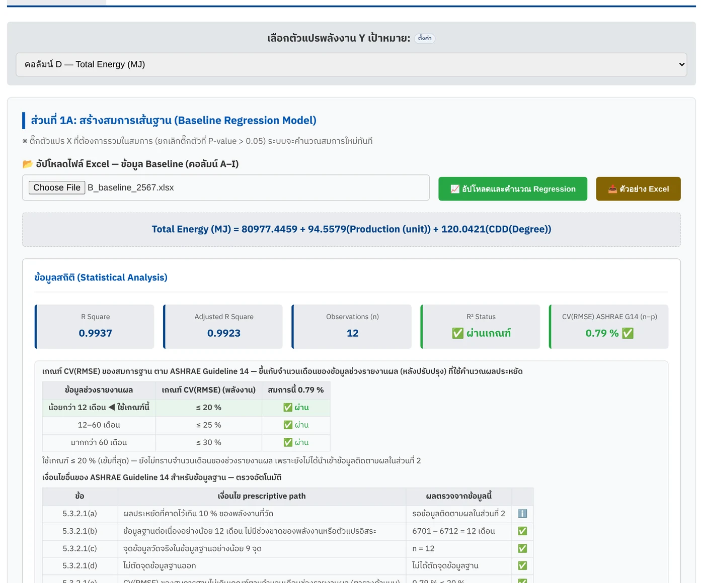
1) สมการเต็ม: P-value เกิน 0.05 มี 3 ตัว · ตัดตัวแรก Reject_Rate(%) (0.9513) → ถัดไป Downtime(hr) → Etc. (unit)
2) Total Energy (MJ) = 80977.4459 + 94.5579(Production (unit)) + 120.0421(CDD(Degree))
3) R² 0.9937 · Adjusted R² 0.9923 · CV(RMSE) 0.79 %
4) Target 325,018 MJ · Variance -15,018 MJ · % Var -4.62 % → สถานะ VAR (ติดลบ = ใช้น้อยกว่าเส้นฐาน)
✓ ผ่าน
ได้ตัวเลขตรงกัน = ใช้เครื่องมือเป็นแล้ว · ลำดับการตัดของโรงงาน B ต่างจากโรงงาน A เพราะดูจาก P-value ของข้อมูลแต่ละชุด
สรุป 1 หน้า (พิมพ์ติดไว้ข้างคอมพิวเตอร์)
คู่มือใช้งาน · สมการฐานพลังงานและกราฟ CUSUM (EnMS MLR & CUSUM Dashboard) · ระดับ Free
34 / 34
1
เตรียมไฟล์
แถวแรกเป็นหัวคอลัมน์ · A เดือน · B–D พลังงาน · E–I ตัวแปร · 12 เดือนขึ้นไป
2
ส่วนที่ 1A
เลือก Y → เลือกไฟล์ → อัปโหลดและคำนวณ
3
ตัดตัวแปร
เอาเครื่องหมายถูกออกทีละตัว จาก P-value สูงสุด จนไม่เหลือตัวแดง
4
บันทึกสมการ
ตั้งชื่อ → บันทึก → ส่งออก JSON สำรอง
5
ส่วนที่ 2
เลือกไฟล์ติดตามผล → วิเคราะห์ข้อมูล → อ่านผลประหยัด ±U · FSU · ตารางและกราฟ CUSUM
6
ส่วนที่ 3
ใช้ข้อมูลจาก 1A → อ่านพลังงานฐาน → คัดกรองจุดที่หลุดแนวโน้ม
อ่านผลแล้วตรวจ
☐
Total (MJ) = kWh × 3.6 + ความร้อน (MJ)
☐
P-value ทุกตัวไม่เกิน 0.05
☐
ดู Adjusted R² และ CV(RMSE) ประกอบ
☐
ไฟล์ติดตามผลเรียงคอลัมน์เหมือนไฟล์ฐาน
☐
CUSUM ลง = ประหยัด · ขึ้น = สิ้นเปลือง
☐
ตัดจุดข้อมูลเมื่อรู้สาเหตุเท่านั้น
อ.หนึ่ง กลับทวี / Aj. Nueng Klubtavee
tripleeenergytools.com
tripleeenergytools.com